00 / How to read this guide
How to read this guide
Who it is for, how it is organised, and a clickable list of everything inside.
| Document | OR/Studio user guide · free, step-by-step Operations Research solver | ||
| App version | %%VERSION%% · 13 modules | Edition | October 2026 |
| Course | Operations Research · 702CO0E034 · NMIMS Shirpur | ||
| Guide by | Dr. Praveenkumar Loharkar | ||
| Live app | or-studio.antideploy.app | Licence | MIT, free to use and share |
| Source code | github.com/Jay-Naik2526/or-studio | ||
Who it is for, how it is organised, and a clickable list of everything inside.
This guide shows you how to use OR/Studio, a free solver for Operations Research. You do not need to know the app. You do not need to install anything. You only need a web browser.
AWho it is for
BHow it is organised
CThe signs used in this guide
max 3x1 + 5x2 | Text in this style is what you type or what the screen shows. |
|---|---|
| ← → Space | Keyboard keys. Ctrl/⌘ means Ctrl on Windows and Linux, and Command on a Mac. |
| Highlighted words | The most important idea on that line. |
| TIP WATCH OUT | A tip saves you time. A watch out box warns you about a common mistake. |
| 01 Model 02 Solution | The two parts of every workspace. Model is what you type. Solution is what the app gives back. |
Technical words are explained the first time they appear. All short forms (such as RHS, BFS or MODI) are also listed in the glossary in chapter 22. In the app you can also hover over most short forms to see their meaning.
DWhere to start
| If you… | Read |
|---|---|
| have never seen the app | Chapters 2, 3 and 4. Then do Walk-through A. |
| need to solve a problem now | Chapter 5, then the chapter of your module. |
| want to practise for an exam | Chapter 6 (Tutor mode, Diff mode and the problem library). |
| teach with the app | Chapter 6 (presentation mode) and chapter 7 (share links, reports). |
| see a strange message | Chapter 21 and chapter 23. |
Click any line to jump to it. In the PDF viewer, the bookmarks list also shows every chapter.
| The basics | |||
| 01 | What OR/Studio is, and is not | The 13 modules at a glance | |
| 02 | Getting started | Open, install, privacy, theme, phone | |
| 03 | Finding your way | Rail, top bar, search, shortcuts | |
| 04 | The workspace explained | Every part of the screen | |
| 05 | Entering a problem | Text, form, grids, graphs, paste | |
| 06 | Learning tools | Step player, Tutor, Diff, library | |
| 07 | Save, share and export | Autosave, link, PDF, LaTeX, CSV | |
| The 13 modules | |||
| 08 | Linear programming | Simplex, Graphical, Sensitivity, Duality | |
| 09 | Integer programming | Branch and bound, Gomory cuts | |
| 10 | Nonlinear programming | Gradient, Newton, KKT, quadratic | |
| 11 | Transportation | NW corner, least cost, Vogel, MODI | |
| 12 | Assignment | Hungarian method | |
| 13 | Network models | Shortest path, spanning tree, max flow | |
| 14 | Project planning | CPM, PERT, crashing | |
| 15 | Queuing analysis | M/M/1, M/M/c, finite queues | |
| 16 | Inventory | EOQ, EPQ, shortages, discounts, newsvendor | |
| 17 | Zero-sum games | Saddle point, dominance, mixed strategies | |
| 18 | Markov chains | n-step, steady state, absorbing | |
| 19 | Simulation | Monte Carlo, queue, demand, inventory, RNG | |
| 20 | Job sequencing | Johnson, CDS, exact, Gantt | |
| Worked walk-throughs | |||
| A | Reddy Mikks, from typing to shadow prices | Linear programming | |
| B | Experiment 10, activity 1: demand simulation | Simulation | |
| C | Experiment 10, activity 4: Johnson's rule | Job sequencing | |
| Reference | |||
| 21 | Reading results | Infeasible, Unbounded, Degenerate… | |
| 22 | Glossary of short forms | %%GLOSSARY_COUNT%% entries | |
| 23 | Troubleshooting and FAQ | When something looks wrong | |
| 24 | Syllabus map | Course 702CO0E034 to modules | |
| 25 | About | Credits and licence | |
A free workbench that solves Operations Research problems and explains every step.
Operations Research (OR) uses maths to make good decisions: how much to make, where to ship, which job to do first, how many staff to hire. OR/Studio is a website that solves these problems for you, and shows how.
1What it is
2What it is not
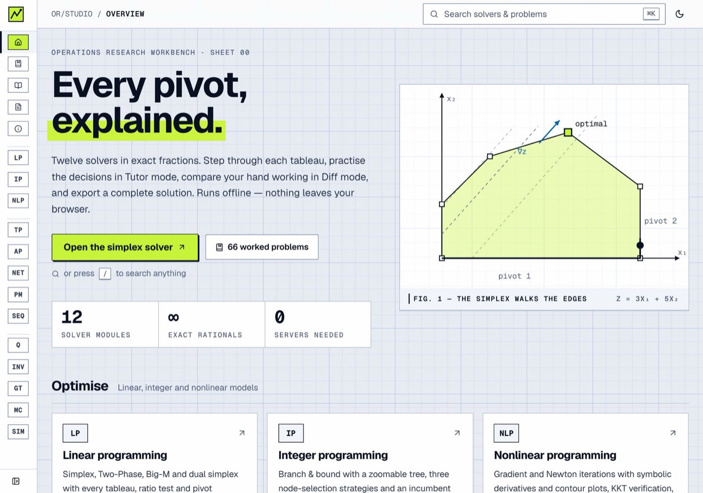
3The 13 modules at a glance
| Module | What it solves | Who needs it |
|---|---|---|
| Linear programming | Best mix of products or resources under straight-line limits. Simplex, Two-Phase, Big-M, Dual, Graphical, Sensitivity, Duality. | Product mix, blending and diet problems; Unit 2. |
| Integer programming | The same, but some answers must be whole numbers or yes/no. Branch and bound, Gomory cuts. | Anything counted in whole units: machines, projects, items in a bag. |
| Nonlinear programming | Best value of a curved function. Gradient, Newton, KKT check, quadratic programs. | Optimisation with curves; advanced students. |
| Transportation | Cheapest way to ship goods from sources to destinations. NW corner, least cost, Vogel, MODI. | Logistics and supply planning; Unit 4. |
| Assignment | Best one-to-one match of workers to jobs. Hungarian method. | Task allocation, timetables; Unit 4. |
| Network models | Shortest route, cheapest spanning tree, maximum flow with minimum cut. | Roads, pipes, cables, data networks. |
| Project planning | Project length and critical path. CPM, PERT, time-cost crashing, Gantt chart. | Project managers and construction; Unit 5. |
| Queuing analysis | Waiting lines: waiting time, queue length, number of servers. | Banks, call centres, service desks. |
| Inventory | How much to order and when. EOQ, production lots, shortages, discounts, newsvendor. | Stores, factories, supply chains. |
| Zero-sum games | Best strategies for two opponents. Saddle point, dominance, mixed strategies. | Competition and decision making; Unit 6. |
| Markov chains | Systems that move between states by chance: n-step, steady state, absorbing chains. | Weather, brand switching, reliability. |
| Simulation | Learning from random trials: Monte Carlo, queue, demand table, inventory, random-number lab. | Systems too hard for a formula; Unit 7 and Experiment 10. |
| Job sequencing | Best order of jobs on 2, 3 or more machines. Johnson, CDS, exact search, Gantt chart. | Workshops and production lines; Unit 7 and Experiment 10. |
Open the app, use it offline, keep your work private, and use it on a phone.
1Open it in any browser
reddy.There is nothing to install and no sign-in. The first visit needs the internet.
2Use it offline
After your first visit, the app saves itself in the browser. Next time it opens even without the internet. When you are online again, the app checks for a newer version each time you open it. See the FAQ to force an update.
3Install it as an app
OR/Studio is a progressive web app. That means your browser can put it on your desktop or home screen, so it opens in its own window like any other program.
| Chrome, Edge, Brave (computer) | Click the install icon at the right end of the address bar, or open the browser menu and choose Install OR-Studio. |
|---|---|
| Android (Chrome) | Open the menu and choose Install app or Add to Home screen. |
| iPhone or iPad (Safari) | Tap Share, then Add to Home Screen. |
The exact words depend on your browser version. If you do not see an install option, you can keep using the website normally.
4Your work stays on your device
5Light and dark theme
Use the moon / sun button in the top bar to switch. The app opens in the light theme and remembers your choice. You can also open the search box (/) and run Switch light / dark theme. Printed reports always use a clean light layout.
6Using it on a phone
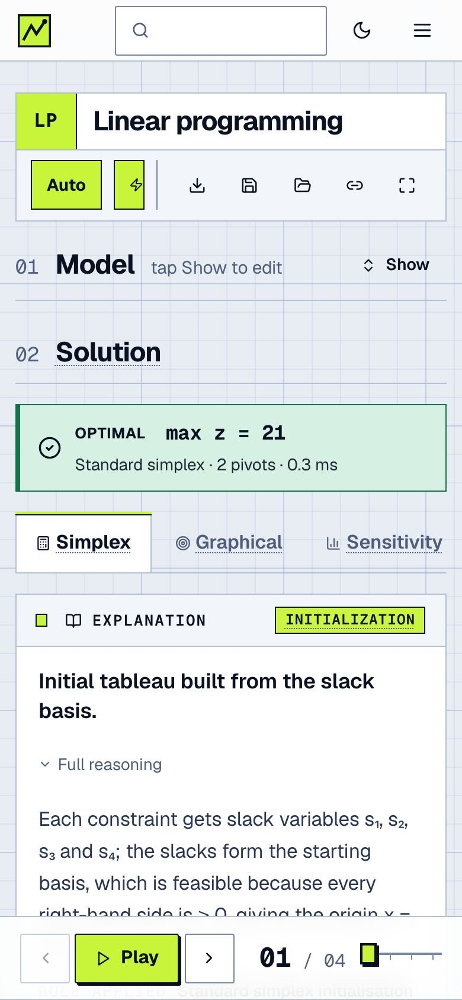
The left rail, the top bar, the search box, hover help and keyboard shortcuts.
1The left rail
On a computer, a narrow rail runs down the left side. It has two parts.
On wide screens (about 1560 pixels and more) the rail shows full names. On smaller screens it shows only the codes. Use Collapse or Expand at the bottom of the rail to change this. The current page is highlighted in lime.
2The top bar
OR/STUDIO / LINEAR PROGRAMMING shows where you are. Click OR/STUDIO to go home.3The search palette
The fastest way to move around. Press / or Ctrl/⌘ + K, or click the search box. Type a few letters. The list shows pages, modules, methods and worked problems that match. Use ↑ ↓ to choose and ↵ to open. Press Esc to close.
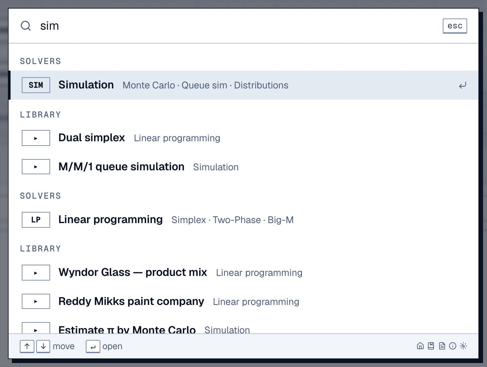
You can search for:
queue, transportvogel, hungarian, johnsonreddy, knapsackthemeChoosing a worked problem opens its module with the problem already filled in.
4Hover explanations for short forms
Textbooks are full of short forms. In OR/Studio, move the mouse over a short form, or tap it on a touch screen, or move to it with the keyboard. A small box explains it. Words with a dotted underline have an explanation. This works for column headings (RHS, ES, EF), symbols (ρ, λ), variable names (s₁ is a slack, a₁ is an artificial variable), and method names (VAM, MODI). Press Esc to close the box.
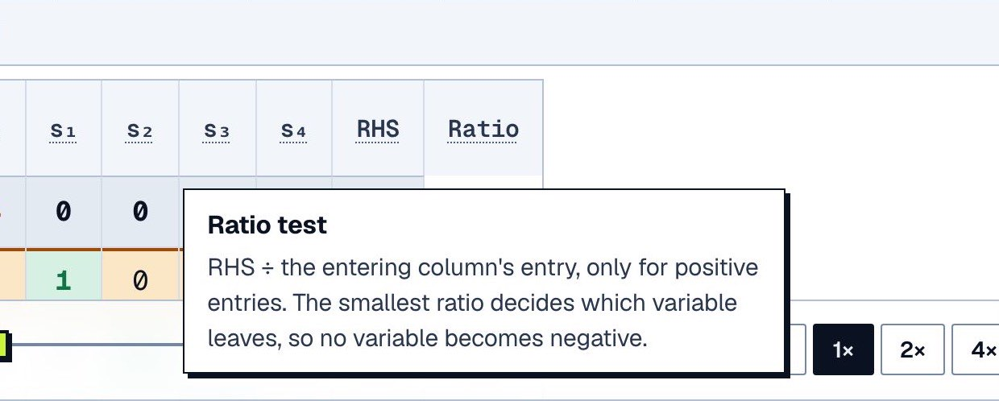
5Keyboard shortcuts
| Key | What it does |
|---|---|
| / or Ctrl/⌘ K | Open the search palette |
| ← / → | Previous step / next step |
| Home / End | First step / last step |
| Space | Play or pause the step player |
| 1 to 9 | Jump straight to step 1 to 9 |
| P | Presentation mode on or off |
| Esc | Close a dialog or menu; leave presentation mode |
Every module uses the same screen, laid out like a worked sheet. Learn it once and you know all 13.
Read the screen from top to bottom. First the title block, then 01 Model (what you type), then 02 Solution (the answer and the reasons). The numbers on the picture match the list below it.
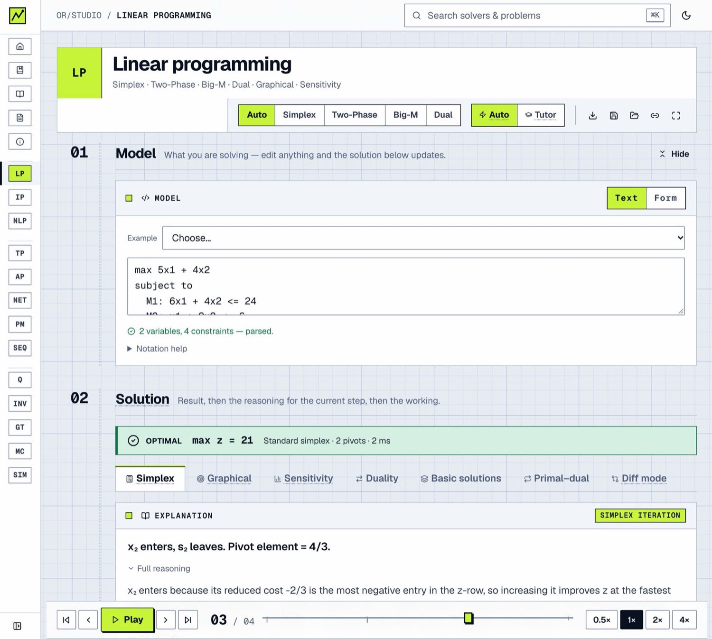
1 2 3 4 5 6 7 8 9 10 11 12 131Result banner and status colours
The banner is the first thing to read. It uses colour and words, so you never depend on colour alone.
| Optimal | The best answer was found. The key number (for example max z = 21) is shown next to it. |
|---|---|
| Warning kinds | Something needs your attention, for example an alternate optimum, a degenerate answer, or an iteration limit. |
| Infeasible / Unbounded | No answer exists, or the answer has no limit. Chapter 21 explains what to do. |
2Explanation card
It explains the step you are looking at. It has a short sentence (for example x₂ enters, s₂ leaves. Pivot element = 4/3.), a Full reasoning paragraph, a formula where one helps, and a Rule applied line that names the rule. A yellow note appears if something special happened.
3Tabs
Tabs show the same problem in different ways. Their names depend on the module. In Linear programming they are Simplex, Graphical, Sensitivity, Duality, Basic solutions, Primal–dual and Diff mode. Use the mouse, or click a tab and then use ← → to move between tabs.
4Step player
The player is fixed at the bottom of the screen so it is always within reach. See chapter 6. In Tutor mode it is replaced by the Tutor card, because you now decide when to move on.
5Hide and Show the model
Click Hide at the right end of the 01 Model line to close the input and see more of the solution. Click Show to open it again. The app remembers your choice.
6Presentation mode
Press P, or click the last icon in the toolbar. The Model card is hidden, and the writing and tables become larger, so a class at the back of the room can read them. Press P or Esc to leave.
Type it, fill a form, edit a grid, paste from Excel, or draw a graph.
The 01 Model card changes with the module. This table shows what to expect.
| Module | How you enter the problem |
|---|---|
| Linear and Integer programming | Type the model as text, or use the Form tab (see 5.1 and 5.2). |
| Nonlinear programming | Type a formula such as (x1 - 3)^2 + 2*(x2 + 1)^2, plus a start point or constraints. |
| Transportation, Assignment, Zero-sum games, Markov chains, Job sequencing | Fill a grid of numbers (see 5.3). |
| Project planning | A table with one row per activity: name, what comes before it, and times (and costs for crashing). |
| Network models | Draw the graph with the mouse, or edit the table of edges (see 5.4). |
| Queuing and Inventory | Boxes for rates and costs. Queuing also has live sliders. |
| Simulation | Boxes, a distribution table, and a list of random numbers, depending on the kind of simulation. |
Write the model the way you would on paper. The objective (what you want to make as large or as small as possible) comes first. The constraints (the limits) follow.
max 3x1 + 5x2 subject to labour: x1 + 2x2 <= 10 3x1 + 2x2 >= 6 x1 - x2 = 1 free x3 (x3 may be negative) int x1 (x1 must be a whole number) bin x2 (x2 must be 0 or 1)
max or min | Starts the objective. After it, write the constraints under subject to (you can also write st or s.t.). |
|---|---|
<= >= = | The relations. You can also type ≤ and ≥. Variables may be on both sides. |
x1, x2 >= 0 | Variables are already non-negative. Writing this line is allowed but not needed. |
x1 means 1·x₁ | Coefficients may be left out. Fractions are fine: 1/2x. |
2 <= x + y <= 8 | A range in one line. |
labour: | A name for a row. It then appears in the results instead of (1), (2)… |
free / int / bin | Declarations: unrestricted sign, whole number, or 0/1 (zero or one). |
The line below the box tells you if the text was understood: 2 variables, 4 constraints — parsed. If something is wrong, the app shows the line and column and puts a caret under the problem.
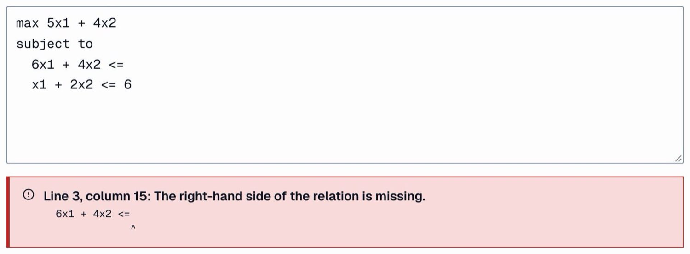
Prefer a grid? Click Form at the top right of the Model card. It edits the same model. Choose Maximise or Minimise, add or remove variables with − and +, type the numbers, pick the relation (≤, ≥ or =) and the right-hand side. The Type row sets each variable to ≥ 0, free, integer or binary. Switch back to Text at any time. The text is rewritten from the form.
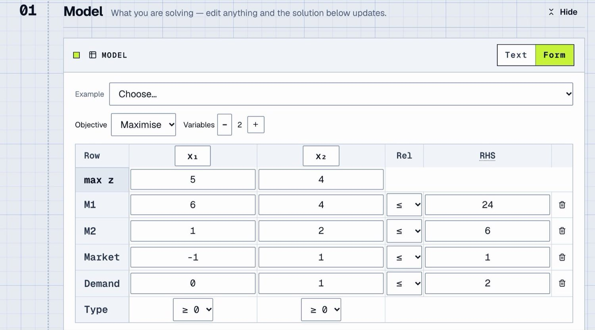
Transportation, Assignment, Games, Markov and Job sequencing use a grid. Click a cell and type.
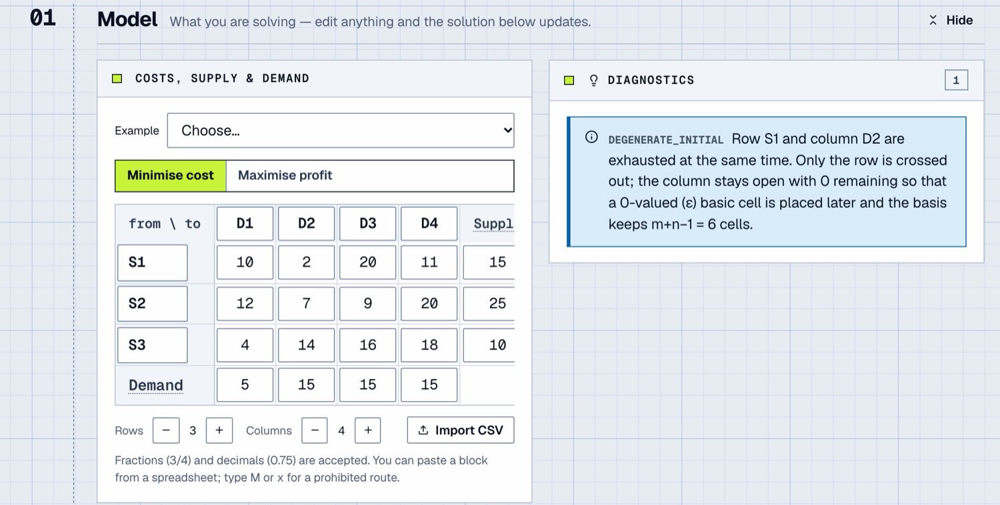
0.75) and fractions (3/4) are accepted. A cell that is not a number is marked as wrong.M or x in a cell to forbid it.+Paste from Excel or a CSV file
You can also click Import CSV under the grid and choose a .csv, .tsv or .txt file.
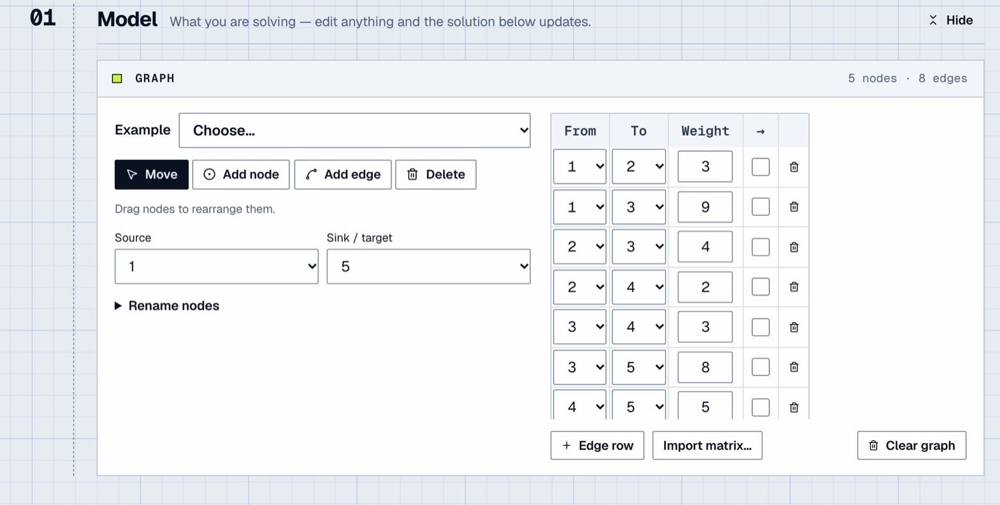
| Move | Drag nodes to rearrange the picture. This never changes the answer. |
|---|---|
| Add node | Choose the tool, then click an empty place on the canvas. |
| Add edge | Click one node, then another node, to join them. |
| Delete | Click a node or an edge to remove it. |
| Edge table | Below the canvas, each edge is a row: From, To, Weight (and Cap. for max flow) and a box for directed (an arrow, one-way). Edit numbers here, or press Edge row to add one. |
| Source, Sink | Choose the start and end nodes in the two lists above the canvas. |
| Other | Rename nodes (folded section), Import matrix… (from a CSV file) and Clear graph. |
Almost every Model card has an Example list at the top. It holds the library problems for that module. Pick one to fill in the model. Some modules also have a clear button (Clear in Job sequencing, Clear graph in Network models) that empties the problem so you can start from nothing.
The step player, Tutor mode, Diff mode, the problem library and presentation mode.
Every solution is a list of steps, for example one step for each simplex pivot. The player at the bottom of the screen moves you through them.
| ⏮ ◀ ▶ ⏭ | First step, previous step, next step, last step. |
|---|---|
| Play / Pause | Moves forward by itself. At the end, Play starts again from step 1. |
| 03 / 04 | Where you are, and how many steps there are. |
| Slider | Drag to jump to any step. |
| 0.5× 1× 2× 4× | The speed of Play. |
Keys work too: ← → Home End Space and 1 to 9. The page address also remembers the step, so a link to a step opens at that step.
Switch Auto to Tutor in the title block. The solver now stops before each decision and asks you. For example in the simplex method it asks Which variable should enter the basis? and then Which variable leaves?. Choose an answer.
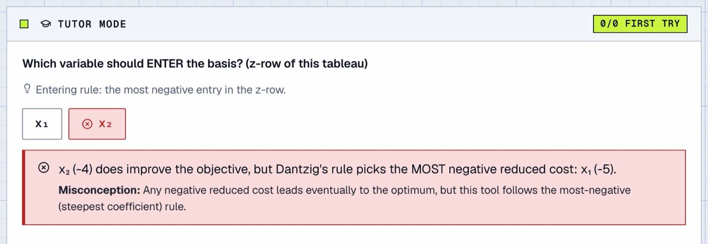
Tutor mode is in Linear programming, Integer programming, Transportation, Assignment, Network models, Project planning, Zero-sum games and Job sequencing. The other modules use formulas and have no decisions to practise. Changing the model or the method restarts the lesson.
Solve the problem by hand first. Then open the Diff mode tab and type your working for one step. OR/Studio compares it with the correct working, finds the first place where they differ, lists the cells, and guesses the cause: a wrong entering or leaving variable, a pivot row that was not divided, a wrong multiplier, a sign error, or a single slip in arithmetic.
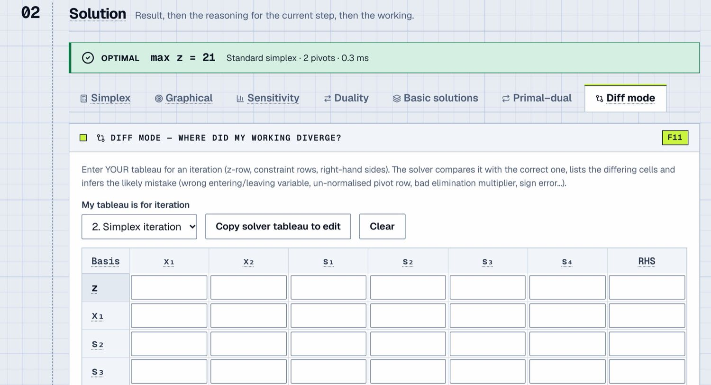
Diff mode is in Linear programming, Integer programming, Transportation, Assignment, Network models, Project planning and Zero-sum games.
The library holds 66 worked problems, one or more for every module: textbook examples, special cases (unbounded, infeasible, degenerate) and the course experiments. Open it from the left rail, or search for a problem with /.
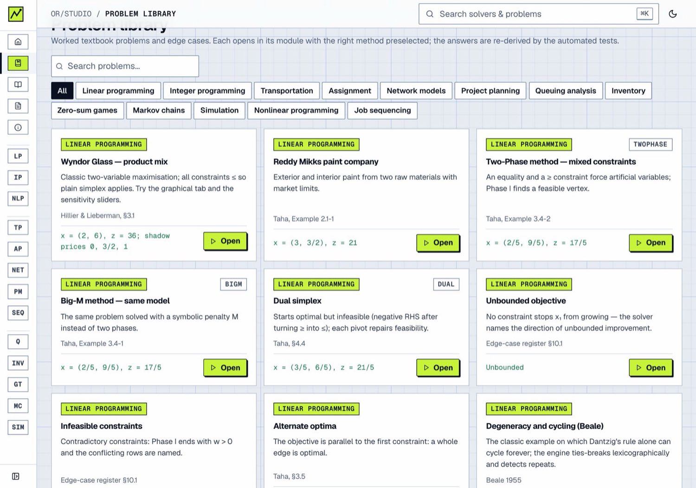
lp-reddy) with each example. A link ending in ?lib=lp-reddy opens it directly.See chapter 4.1. Press P to enlarge the screen for a class, and P or Esc to leave.
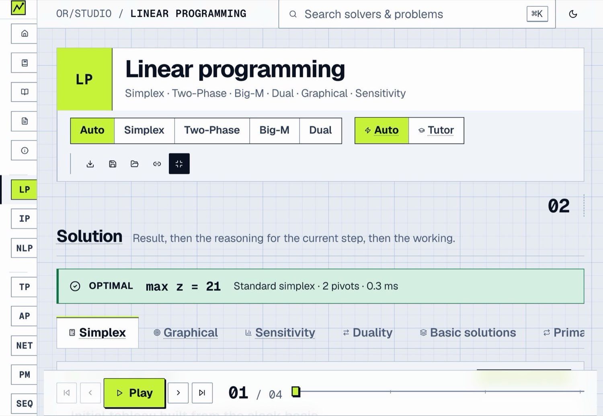
Keep your work, send it to a friend, or take the solution into a document.
You do not need to press anything. About half a second after you stop changing a model, the app saves it in your browser. When you return to the module, your last model is there. Each module has its own autosave. The footer of the workspace says Autosaved in this browser.
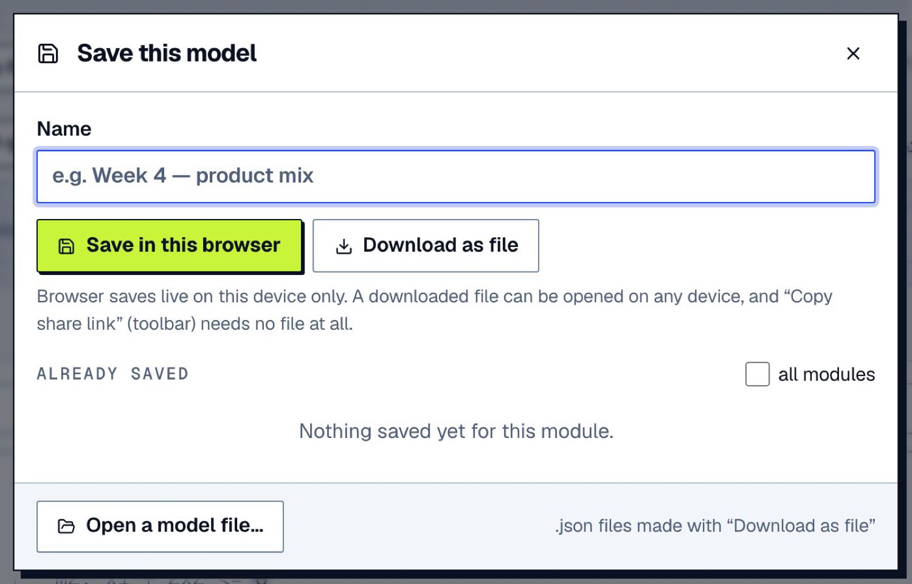
Save is the disk icon in the toolbar. Open is the folder icon next to it.
.json file you can send or keep.In Open you see all models saved for this module. Tick all modules to see every module. For each model you can open it (click its name), rename it (pencil), download it, or delete it (the app asks Delete? first). Open a model file… loads a .json file from your computer. A model made for another module opens in that module.
Click the link icon in the toolbar. The app copies a web address to the clipboard and tells you how long it is. Paste it into a message. Whoever opens it sees your model, your method and your step. No file and no account are needed. The model is stored inside the link, so very large models may give a link that is too long for some chat apps.
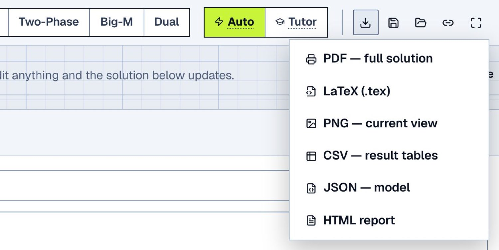
The export menu turns the current solution into a file. Reports include the model, every step with its explanation, the result and the views you were looking at.
If nothing is solved yet, the app says Nothing to export yet.
| Choice | What you get | Use it for |
|---|---|---|
| PDF — full solution | A clean report opens in a print window. | Handing in a solution or printing notes. Choose Save as PDF as the printer. Allow pop-ups if the browser blocks the window. |
| LaTeX (.tex) | A document that uses the amsmath and booktabs packages. | Theses and papers written in LaTeX. |
| PNG — current view | A picture of the view you are looking at. | Slides and notes: a graph, a tableau, a Gantt chart. |
| CSV — result tables | The result tables as comma-separated text. | Opening the numbers in Excel or other software. |
| JSON — model | The model only, as a small file. | Backup, or sending the problem to someone. Same as Download as file. |
| HTML report | The report as a web page file. | Sharing a readable solution with no software needed. |
Simplex · Two-Phase · Big-M · Dual · Graphical · Sensitivity · Duality · Basic solutions · Primal–dual
1What it solves
You choose how much of several things to do (the variables) to make one number as big (profit) or as small (cost) as possible (the objective). Your choices are limited by constraints, such as the hours or material you have. In linear programming, everything is a straight-line relation.
2When to use it
If answers must be whole numbers, use Integer programming. If the relation is curved, use Nonlinear programming.
3How to enter your problem
| Method | What it does |
|---|---|
| Auto | Uses the plain Simplex if every row is ≤ with a right-hand side of 0 or more. Otherwise it uses Two-Phase. |
| Simplex | The standard tableau method, starting from the slack variables. |
| Two-Phase | Phase I finds a feasible starting point with artificial variables. Phase II then optimises the real objective. |
| Big-M | Artificial variables with a very large penalty M. The app keeps M as a symbol, never as a number. |
| Dual | Dual simplex. It needs a start that is optimal but not yet feasible (a minimisation with costs of 0 or more). If it cannot start, the app switches method and tells you why. |
4What you get
The banner shows the status and the best value. The tabs are:
| Simplex | Each tableau, the pivot, the ratio test, and below it the Solution card: variable values, slack of each constraint and its shadow price. |
|---|---|
| Graphical | Only for two variables. Draw the constraints and the feasible region and see the best corner. You can drag a constraint's right-hand side. |
| Sensitivity | How far each right-hand side and cost can change before the answer changes. Range bars, a what-if slider and a sentence in plain words. |
| Duality | The dual problem written out, a table that matches primal and dual parts, and checks (such as strong duality). |
| Basic solutions | Every possible basis, with its point and objective value. It marks the feasible ones (the corner points). |
| Primal–dual | The primal–dual algorithm, with its own step player. |
| Diff mode | Compare your hand-made tableau with the correct one (chapter 6.3). |
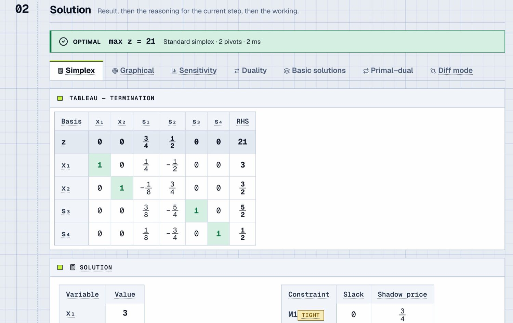
5How to read the result
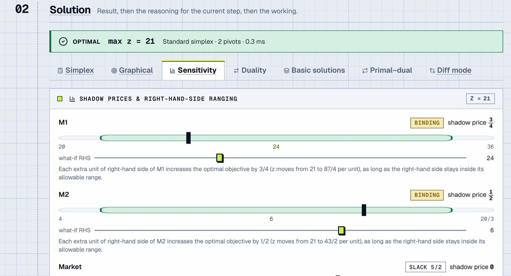
6Worked mini example
Library problem lp-reddy (Reddy Mikks paint company, Taha 2.1-1). Exterior paint (x₁) earns 5 and interior paint (x₂) earns 4 per unit.
max 5x1 + 4x2 subject to M1: 6x1 + 4x2 <= 24 M2: x1 + 2x2 <= 6 Market: -x1 + x2 <= 1 Demand: x2 <= 2
| Result | Optimal x₁ = 3, x₂ = 3/2, max z = 21, after 2 pivots (4 steps). |
|---|---|
| Shadow prices | M1 = 3/4, M2 = 1/2, Market = 0, Demand = 0. M1 and M2 are tight (slack 0). Market has slack 5/2 and Demand has slack 1/2. |
| Basic solutions tab | The standard form has 6 variables and 4 equations, so there are C(6, 4) = 15 candidate bases. 6 are feasible corner points, 8 are infeasible and 1 is not a basis. |
| Duality tab | The dual is min 24y₁ + 6y₂ + y₃ + 2y₄. Its answer is also 21. |
A second example, lp-twophase, minimises 4x1 + x2 with an equality and a ≥ row. Auto chooses Two-Phase. The answer is x = (2/5, 9/5) and z = 17/5. Walk-through A follows Reddy Mikks from the first key press.
7Tips and common mistakes
labour: …). The shadow price table then shows labour instead of (1), which is much easier to read.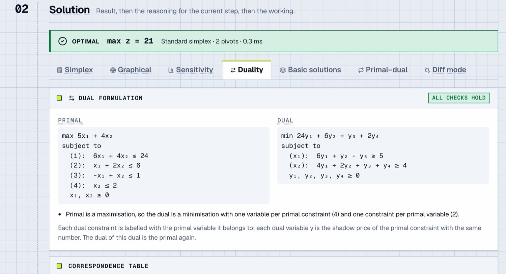
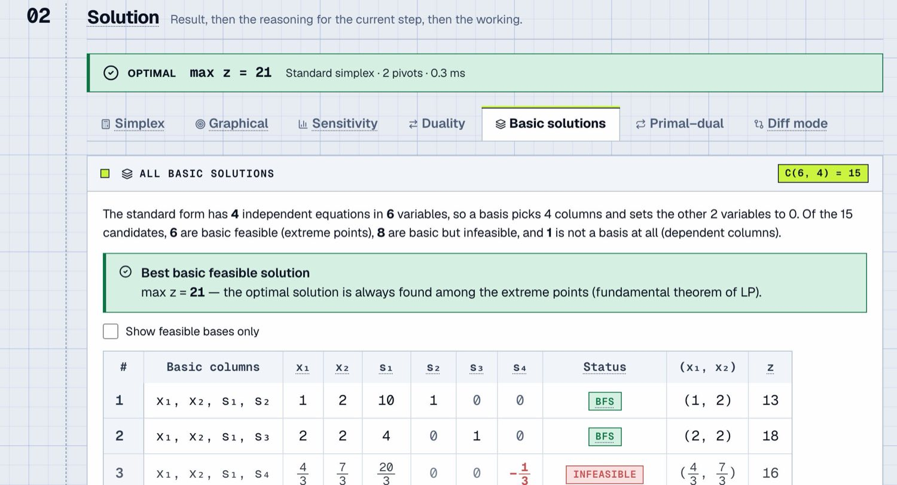
Branch and bound with a tree · Gomory cuts
1What it solves
It is linear programming with one extra rule: some or all variables must be whole numbers (integers), or 0 or 1 (binary). You cannot build 2.5 machines.
2When to use it
3How to enter your problem
int x1, x2 or bin x1, x2. The Form tab has the same choices in its Type row.4What you get
5How to read the result
x ≤ 1, one with x ≥ 2. It repeats. Each box in the tree is one LP.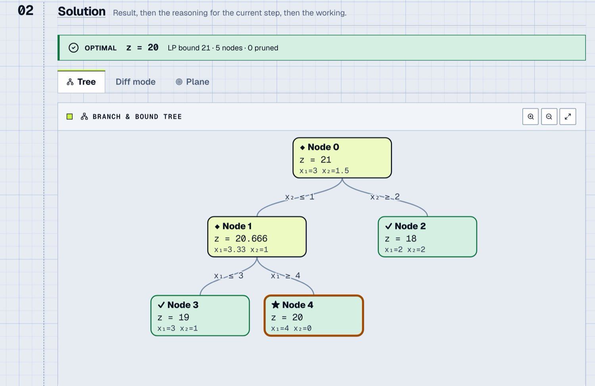
int-taha. The star marks the best whole answer, z = 20.6Worked mini example
Library problem int-taha (Taha 9.2-1): max 5x1 + 4x2 subject to 6x1 + 4x2 <= 24, x1 + 2x2 <= 6, int x1, x2.
| Step 1 (root) | Ignore the whole-number rule. The LP gives x₁ = 3, x₂ = 3/2, z = 21. This is an upper bound. |
|---|---|
| Branching | x₂ = 1.5 is not whole, so split into x₂ ≤ 1 and x₂ ≥ 2. Then split x₁ ≤ 3 and x₁ ≥ 4. |
| Result | Optimal x = (4, 0), z = 20, found with 5 nodes. The gap to the LP bound (21) is 1. |
| Gomory method | The same problem needs 4 cuts and reaches the same z = 20. |
7Tips and common mistakes
int-infeasible: 2x1 = 3 with int x1.int-knap (a 0-1 knapsack, best value 28) to see a binary problem. Try the three node selections and compare the trees.Gradient and Newton steps · KKT check · exact quadratic programming
1What it solves
It finds the lowest (or highest) value of a curved function, such as (x1 − 3)² + 2(x2 + 1)², with or without constraints. It gives three tools, chosen with the Method switch.
2When to use it
3How to enter your problem
x1, x2, the signs + − * / ^ and the functions exp, ln, sin, cos, sqrt. Type a Starting point such as 0, 0. Pick Newton or Gradient descent.g(x) ≤ 0 or h(x) = 0), and type the Candidate point.4What you get
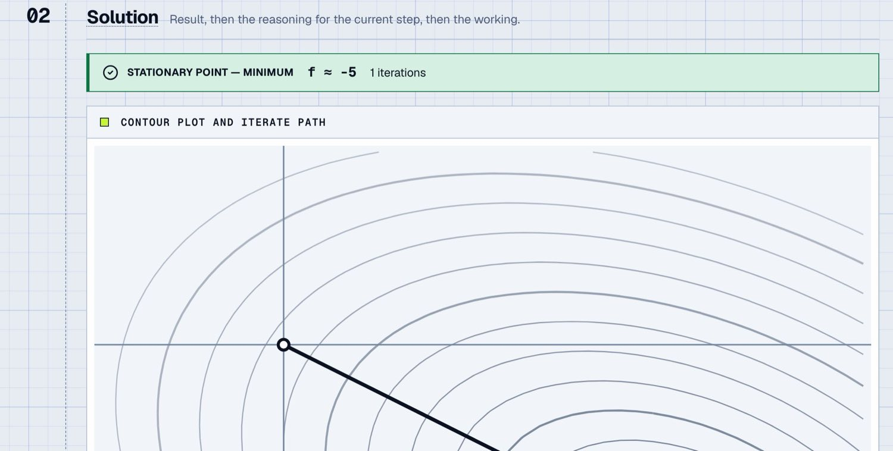
nlp-bowl. Newton's method reaches the minimum in one step.5How to read the result
6Worked mini example
nlp-bowl | f = (x1 − 3)^2 + 2*(x2 + 1)^2 + x1*x2, start (0, 0), Newton. Result: stationary point (4, −2), minimum, f = −5, after 1 iteration. Gradient descent needs more steps and zig-zags. |
|---|---|
nlp-kkt | Is (1, 1) a KKT point of min (x₁−2)² + (x₂−2)² subject to x₁ + x₂ − 2 ≤ 0? KKT satisfied, with multiplier λ = 2 on the active constraint. |
nlp-qp | Quadratic program with Q = [[2,0],[0,2]], c = (−4, −4), x₁ + x₂ ≤ 2. Exact optimum x = (1, 1), objective −6. The problem is convex, so this is the global minimum. |
7Tips and common mistakes
2*x1. Use ^ for powers: x1^2.g(x) ≤ 0. For x1 + x2 ≤ 2, type x1 + x2 - 2.Starting solution · MODI optimality test · closed loops · method comparison
1What it solves
Goods are in stock at several sources (factories, warehouses). Several destinations (shops, cities) need them. Shipping one unit on each route has a cost. The module finds how many units to send on each route so that the total cost is lowest.
2When to use it
3How to enter your problem
M or x in a cell for a route that cannot be used.If supply and demand are not equal, the app adds a labelled dummy row or column by itself and tells you.
4What you get
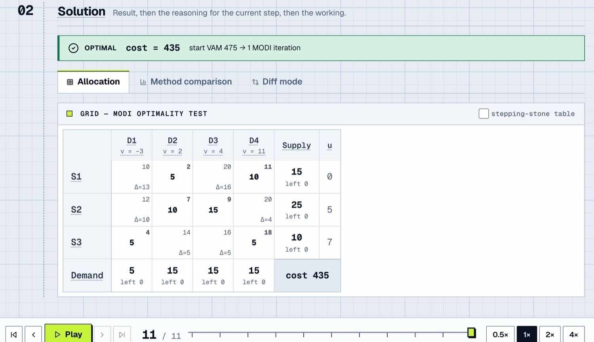
tr-taha. Each cell shows the unit cost (small) and the units sent (large), with u, v and Δ.5How to read the result
cost = u + v.cost − u − v. If every Δ ≥ 0, the solution is optimal. A negative Δ shows a cheaper route, and the app draws the closed loop used to move units.6Worked mini example
Library problem tr-taha (SunRay Transport, Taha 5.1-1). Supply 15, 25, 10; demand 5, 15, 15, 15.
| D1 | D2 | D3 | D4 | |
|---|---|---|---|---|
| S1 | 10 | 2 | 20 | 11 |
| S2 | 12 | 7 | 9 | 20 |
| S3 | 4 | 14 | 16 | 18 |
With Vogel, the starting cost is 475. One MODI step brings it to Optimal 435. The shipments are S1→D2: 5, S1→D4: 10, S2→D2: 10, S2→D3: 15, S3→D1: 5 and S3→D4: 5. The dual values are u = (0, 5, 7) and v = (−3, 2, 4, 11). The Method comparison tab shows how the other starts compare.
7Tips and common mistakes
Hungarian method · exact minimum line cover · rectangular · maximisation
1What it solves
It matches each worker to exactly one job so that the total cost (or time) is as low as possible. The cost of every worker–job pair is in a table.
2When to use it
3How to enter your problem
M or x in a cell if a worker cannot do a job.4What you get
The Hungarian tab shows the matrix at each stage, the lines that cover the zeros, and finally the optimal assignment with the cost of each pair. Tutor mode and Diff mode are available.
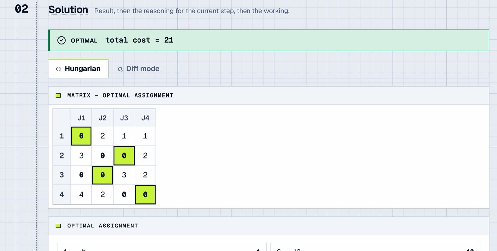
as-4x4: the reduced matrix with its independent zeros, and the list of pairs.5How to read the result
6Worked mini example
Library problem as-4x4: four workers and four jobs. Costs: 1 4 6 3 / 9 7 10 9 / 4 5 11 7 / 8 7 8 5.
| Result | Optimal total cost = 21, in 7 steps. The first line cover uses fewer than 4 lines, so the matrix is adjusted once. |
|---|---|
| Assignment | 1 → J1 (cost 1), 2 → J3 (10), 3 → J2 (5), 4 → J4 (5). |
Other library problems: as-rect (2 workers, 3 jobs, so a dummy worker is added; total 9), as-max (maximise profit) and as-3x3 (total 9).
7Tips and common mistakes
Draw the graph · shortest paths · spanning trees · maximum flow
1What it solves
A network has nodes (places) joined by edges (roads, pipes, cables). This module answers three kinds of question: the shortest route, the cheapest way to connect everything (spanning tree), and the largest flow from a source to a sink.
2When to use it
3How to enter your problem
4What you get
A Graph tab that is redrawn at each step, with labels on the nodes. For shortest paths, it also gives a table of distances; for max flow, a table of flow on each edge and the minimum cut. There is also a Diff mode and a Tutor mode.
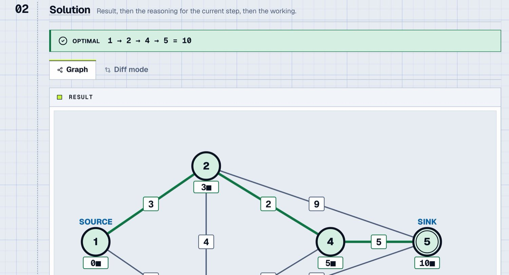
net-short: the shortest route from node 1 to node 5 and the distance to every node.5How to read the result
flow/capacity on each edge. Saturated edges are full. The min cut edges are the bottleneck.6Worked mini example
net-short | Dijkstra, 13 steps. Shortest route 1 → 2 → 4 → 5, length 10. Distances: node 2 = 3, node 3 = 7, node 4 = 5, node 5 = 10. |
|---|---|
net-flow | Max flow from S to T: 15. Edges S→A (10/10) and D→T (10/10) are saturated. The minimum cut is made of A→C and D→T, with capacity 5 + 10 = 15, equal to the flow. |
net-neg | A graph with a negative edge. Dijkstra refuses it; Bellman–Ford handles it. |
7Tips and common mistakes
CPM · PERT · floats · Gantt chart · network diagram · time–cost crashing
1What it solves
A project is a set of activities, and some cannot start until others finish. This module finds the shortest time to finish the whole project, and the critical path: the chain of activities that cannot be delayed without delaying the project.
2When to use it
3How to enter your problem
C, D). Leave it empty if it can start at once.4What you get
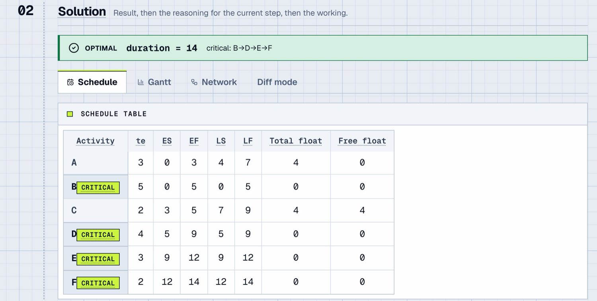
pr-cpm. Rows marked CRITICAL have zero total float.5How to read the result
(a + 4m + b) / 6; variance ((b − a) / 6)². The module adds the variances along the critical path and gives the probability of finishing by a target time.6Worked mini example
pr-cpm | A=3, B=5, C=2 (after A), D=4 (after B), E=3 (after C, D), F=2 (after E). Project duration 14. Critical path B → D → E → F. A and C have 4 days of float. |
|---|---|
pr-pert | Duration 14, critical path A → C → E, variance 2.3333 (σ = 1.528). The chance to finish by T = 16 is 90.5 %. It is 95 % sure to finish within 16.51. |
pr-crash | Normal duration 9 at cost 360. Crash plan: 8 days for 30 more, 7 days for 70 more, 6 days for 130 more. The project cannot go below 6 days. |
7Tips and common mistakes
Live λ / μ / c sliders · performance measures · cost-optimal number of servers
1What it solves
It studies waiting lines. Customers arrive at random, wait if all servers are busy, and are served. The module tells you how long people wait, how many are in line, and how busy the servers are, using formulas.
2When to use it
3How to enter your problem
| Model | Use it for |
|---|---|
| M/M/1 | One server, unlimited waiting room. |
| M/M/c | c servers sharing one line (a call centre). |
| M/M/1/N | One server, and at most N customers in the system. Customers who find it full are lost. |
| M/M/c/N | c servers, at most N customers. |
| Machines | A small group of machines that break down and are fixed by c repairers. |
| M/G/1 | One server, service time of any shape. You give its standard deviation σ (0 means a fixed service time). |
4What you get
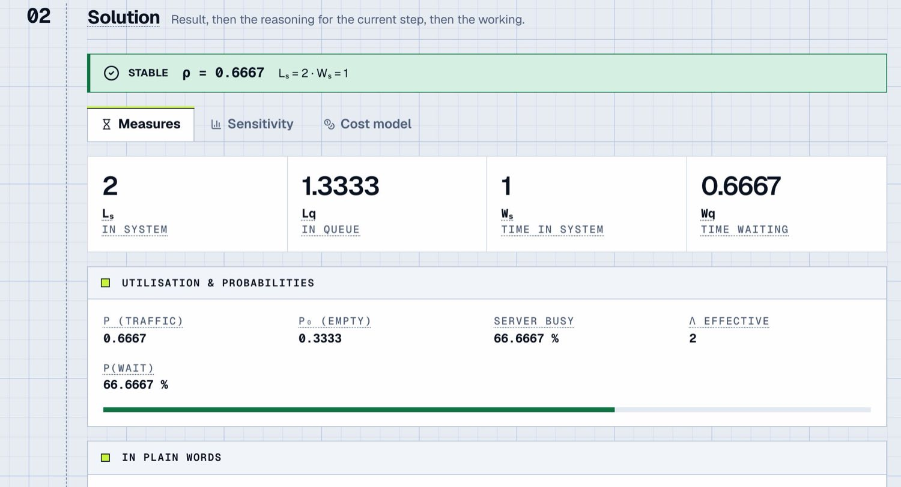
q-mm1.5How to read the result
| ρ (rho) | Traffic intensity: how busy the servers are, λ / (c·μ). It must be less than 1, or the queue grows forever. The banner says Stable or not. |
|---|---|
| Lₛ, Lq | Average number of customers in the system, and in the queue only. |
| Wₛ, Wq | Average time in the system, and waiting in the queue only. |
| P₀, P(wait) | Chance that the system is empty, and the chance that a customer has to wait. |
6Worked mini example
Library problem q-mm1 (one clerk): λ = 2 customers per hour, μ = 3 per hour. The result is Stable with ρ = 0.6667, Lₛ = 2, Lq = 1.3333, Wₛ = 1 hour and Wq = 0.6667 hour. The clerk is busy 66.67 % of the time and 66.67 % of customers have to wait.
Library problem q-cost: λ = 10, μ = 3, server cost 20 per hour, waiting cost 30 per customer-hour. With 4 servers (ρ = 0.8333) the total cost is 278.66 (server cost 80 plus waiting cost 198.66). The Cost model tab shows the best choice is 5 servers.
7Tips and common mistakes
EOQ · production lots · planned shortages · quantity discounts · newsvendor
1What it solves
How much should you order, and when? Ordering often costs a fixed fee each time. Keeping stock costs money too. The module finds the order size with the lowest total cost.
2When to use it
3How to enter your problem
| Model | Idea |
|---|---|
| EOQ | Economic order quantity. Items arrive all at once. |
| EPQ | Economic production quantity. Items are made at rate k while they are used. |
| Shortages | You may run out and fill the order later at a penalty p. |
| Discounts | The price falls when you buy more. The best tier that is feasible wins. |
| Newsvendor | One period with random demand and leftover stock sold at a salvage price. |
4What you get
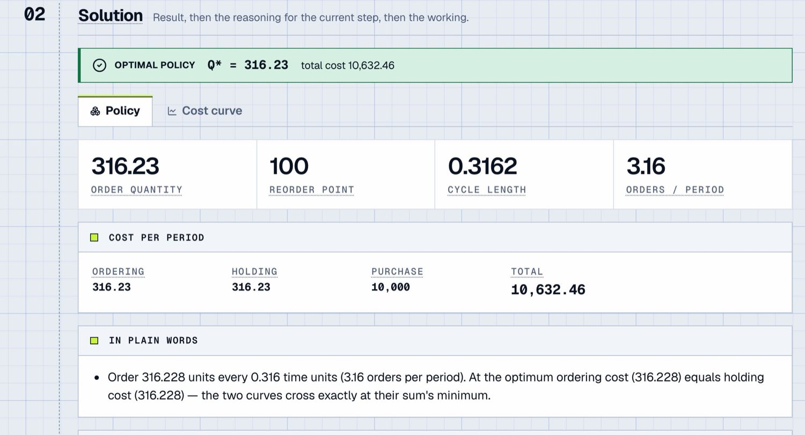
inv-eoq.5How to read the result
6Worked mini example
Library problem inv-eoq (Taha 13.3-1): D = 1000 per period, K = 100, h = 2, c = 10, L = 0.1.
| Formula | Q* = √(2KD / h) = √(2·100·1000 / 2) |
|---|---|
| Result | Optimal policy Q* = 316.23 units, cycle length 0.3162, 3.16 orders per period, reorder point 100. |
| Costs per period | Ordering 316.23 + holding 316.23 + purchase 10,000 = 10,632.46. |
Library problem inv-news: price 10, cost 6, salvage 2, demand Normal(100, 20). The critical ratio is (10 − 6) / (10 − 2) = 0.5, so the best stock level is 100.
7Tips and common mistakes
Saddle points · dominance · graphical method · exact LP strategies
1What it solves
Two players choose actions at the same time. A table shows what the row player wins for each pair of choices. What one player wins, the other loses: this is a zero-sum game. The module finds the best strategy for each player and the value of the game.
2When to use it
3How to enter your problem
4What you get
A Solution tab with the steps (the saddle point check, strikes of dominated rows or columns, the graph or the LP), the optimal strategies for both players, the value, and a heatmap of the payoffs. A Verified badge shows that the answer was checked. Tutor mode and Diff mode are available.
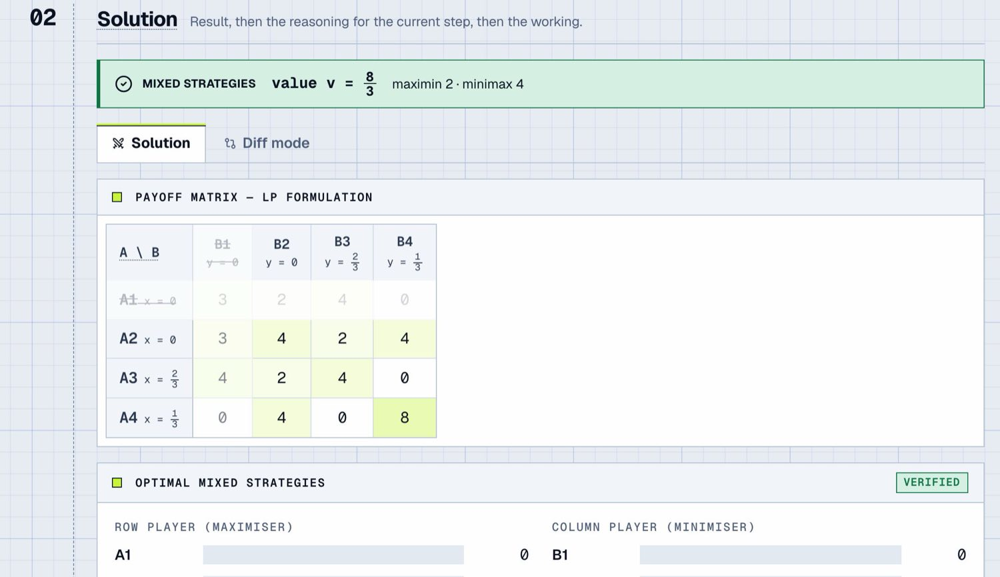
g-dom: mixed strategies for both players and the value 8/3.5How to read the result
6Worked mini example
g-saddle | Payoffs 3 5 4 / 2 1 0 / 1 6 3. Row minimums are 3, 0, 1, so maximin = 3. Column maximums are 3, 6, 4, so minimax = 3. Saddle point at (A1, B1), value 3. |
|---|---|
g-dom | A 4 × 4 game. Maximin 2 ≠ minimax 4, so there is no saddle point. After dominance and the LP method: row player plays A3 with ⅔ and A4 with ⅓; column player plays B3 with ⅔ and B4 with ⅓. Value = 8/3 (about 2.667). It favours the row player. |
g-pennies | Matching pennies: both mix ½–½, value 0. |
7Tips and common mistakes
n-step probabilities · exact steady state · classes and periodicity · absorption · first passage
1What it solves
A system is always in one of a few states. At each step it moves to another state (or stays) with fixed probabilities. The module tells you where it will be after n steps, and what happens in the long run.
2When to use it
3How to enter your problem
4What you get
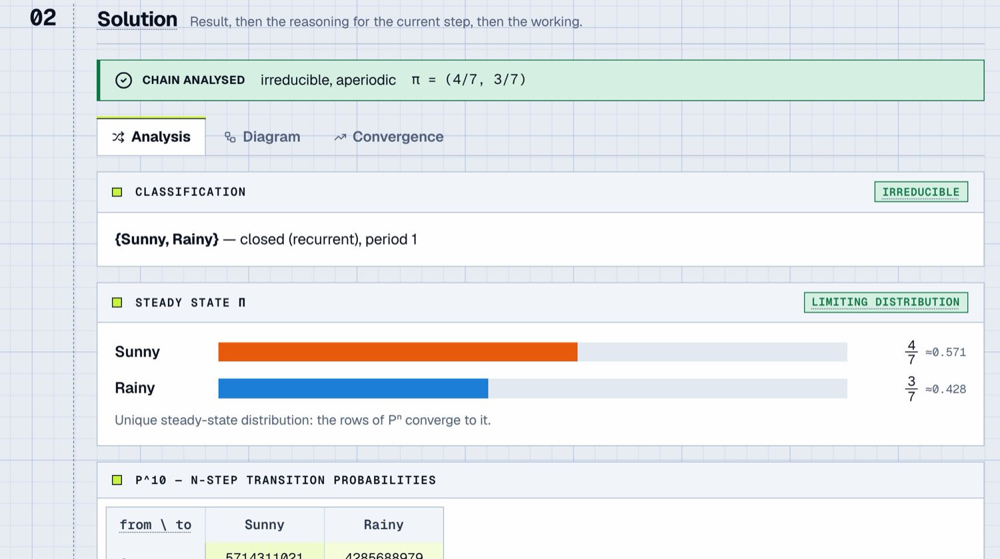
mk-weather.5How to read the result
πP = π with the shares adding up to 1.1/πⱼ.6Worked mini example
Library problem mk-weather: P = [[0.7, 0.3], [0.4, 0.6]], start Sunny, n = 10. The chain is irreducible and aperiodic. The steady state is π = (4/7, 3/7), about 0.571 sunny and 0.429 rainy. After 10 steps from Sunny, the distribution is already 0.5714 and 0.4286. The mean return time to Sunny is 7/4 steps.
Try mk-abs (gambler's ruin, with absorbing states Broke and Win) and mk-period (a flip-flop of period 2: Pⁿ never settles, yet π = (½, ½) exists).
7Tips and common mistakes
1/3 to keep the answers exact.Monte Carlo · Queue sim · Demand table · Inventory simulation · RNG lab
1What it solves
When a system is too complex for a formula, you can imitate it on the computer many times with random numbers, and watch what happens on average. This module has five tools, chosen in the Method switch.
| Tool | What it does | Result tabs |
|---|---|---|
| Monte Carlo | Estimates an average (or a probability) by trying a formula on many random inputs. | Mean, spread, confidence interval, histogram, convergence plot |
| Queue sim | Runs a waiting line with random arrivals and service, one customer at a time. | Results, Event trace |
| Demand table | Simulates daily demand from a probability table, using random-number intervals (the classroom method). | Walkthrough, Simulation table, Summary |
| Inventory | Simulates a periodic-review stock policy day by day and searches for the best order-up-to level S. | Walkthrough, Day table, Policy search, Totals |
| RNG lab | Shows how random numbers are made (mid-square, congruential, Mersenne Twister) and tests them. | Working table, cycle and period, tests, plot |
2When to use it
3How to enter your problem
4What you get
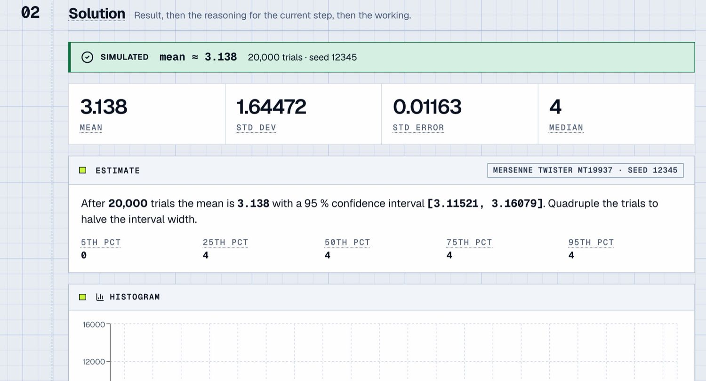
sim-pi): the estimate, its confidence interval, the histogram and the convergence plot.5How to read the result
6Worked mini examples
sim-pi | Estimate π: random points (x, y) in a square, count those inside the quarter circle. With seed 12345 and 20,000 trials: mean ≈ 3.138, 95 % interval [3.11521, 3.16079]. |
|---|---|
sim-queue | An M/M/1 queue with λ = 2 and μ = 3, 5,000 customers. Simulated waiting time Wq ≈ 0.6229; the formula gives 0.6667. |
sim-inv-sS | Ten days, order up to S = 8, review every 5 days. Total cost 76 (7.6 per day), fill rate 61.9 %. The policy search finds the cheapest S = 11. |
sim-rng-lcg | X(n+1) = (17·X(n) + 43) mod 100 from X₀ = 27 gives 2, 77, 52, 27 and then repeats. Period 4: a poor generator. |
sim-exp10-demand | Ten days of cake demand: see Walk-through B. |
7Tips and common mistakes
Johnson's rule · three machines · CDS heuristic · exact search · Gantt chart and idle times
1What it solves
Several jobs must go through the same machines in the same order (for example first the saw, then the paint). In what order should the jobs enter so that everything is finished as early as possible? The time from the start of the first job to the end of the last job is the total elapsed time (also called the makespan).
2When to use it
3How to enter your problem
| Method | Use it for |
|---|---|
| Johnson | Two machines. It always gives the best sequence. It also works for three machines if a simple condition holds (the smallest time on machine 1 is at least the largest on machine 2, or the same for machine 3). |
| CDS | Three or more machines. A good and fast heuristic (a rule of thumb) from Campbell, Dudek and Smith. Not proven best. |
| Exact | Tries every order and keeps the best. Works for up to 9 jobs. |
4What you get
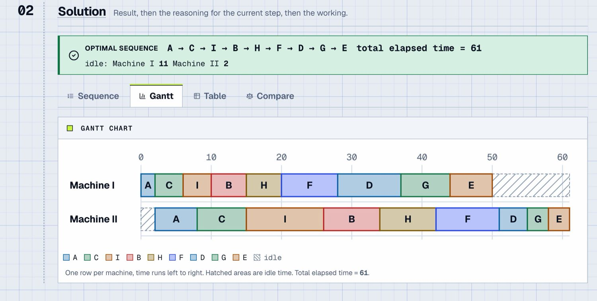
seq-exp10. Gaps on a machine are idle time.5How to read the result
6Worked mini example
Library problem seq-exp10 is the course example (Walk-through C): 9 jobs on 2 machines, best sequence A → C → I → B → H → F → D → G → E, total elapsed time 61 hours, idle 11 hours on Machine I and 2 hours on Machine II.
Library problem seq-4m-cds (four machines, jobs A to E): CDS builds three candidate sequences with total times 52, 53 and 51. The best is E → A → C → D → B, total 51, with idle time 18, 19, 31 and 19 hours on M1 to M4.
7Tips and common mistakes
seq-3m-nocond, where a better sequence exists.seq-ties: total 18). Any one of them is correct.One linear programme, start to finish. Follow it on your own screen.
The problem. A paint company makes exterior paint (x₁) and interior paint (x₂) from two raw materials, M1 and M2. Each ton of exterior paint earns 5 (thousand dollars) and each ton of interior paint earns 4. The company has 24 tons of M1 and 6 tons of M2 each day. Exterior paint needs 6 tons of M1 and 1 ton of M2 per ton; interior paint needs 4 tons of M1 and 2 tons of M2. The market limits the daily excess of interior over exterior paint to 1 ton, and interior paint sells at most 2 tons a day. How much of each paint should be made to earn the most?
max 5x1 + 4x2 subject to M1: 6x1 + 4x2 <= 24 M2: x1 + 2x2 <= 6 Market: -x1 + x2 <= 1 Demand: x2 <= 2 x1, x2 >= 0The line under the box turns green: 2 variables, 4 constraints — parsed. (Or pick Reddy Mikks paint company from the Example list.)
max z = 21, Standard simplex · 2 pivots. The Method is Auto. All rows are ≤ with positive right-hand sides, so the plain simplex was chosen.| Step | Name | What happens |
|---|---|---|
| 1 | Initialisation | Each constraint gets a slack variable (s₁ to s₄). The slacks form the starting basis. This is the origin, x = 0 and z = 0. |
| 2 | Simplex iteration | x₁ enters (reduced cost −5 is the most negative). Ratio test: 4, 6, —, —. Smallest is 4, so s₁ leaves. Pivot element = 6. z goes from 0 to 20. |
| 3 | Simplex iteration | x₂ enters (reduced cost −2/3). Ratios 6, 3/2, 3, 2. Smallest is 3/2, so s₂ leaves. Pivot element = 4/3. z goes from 20 to 21. |
| 4 | Termination | No negative number is left in the z row, so the solution is optimal: x₁ = 3, x₂ = 3/2, z = 21. |
x₁ = 3, x₂ = 3/2, z = 21. Constraints: M1 and M2 are marked tight (slack 0). Market has slack 5/2 and Demand has slack 1/2.z = 22.5 at x = (3.5, 1.25). That is 21 + 2 × 3/4, exactly as predicted. Change it back to 24.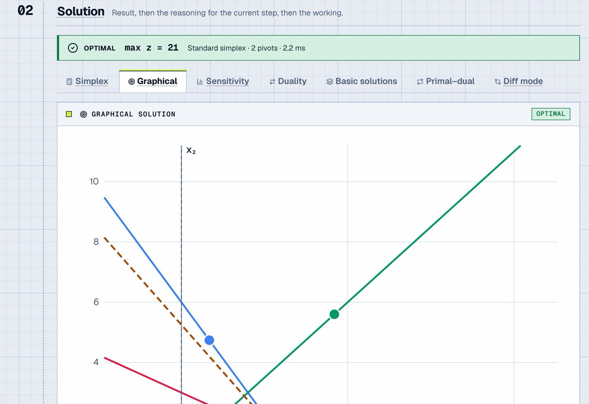
Ten days of cake demand in a stationery shop, with the given random numbers.
The problem. A stationery shop sells cakes. Daily demand is not fixed. From past records, the demand and its chance are:
| Demand | 0 | 10 | 20 | 30 | 40 | 50 |
|---|---|---|---|---|---|---|
| Probability | 0.01 | 0.20 | 0.15 | 0.50 | 0.12 | 0.02 |
Simulate ten days with these random numbers (two digits each): 40, 19, 87, 83, 73, 84, 29, 09, 02, 20.
1Cumulative probability and intervals (steps 1 and 2)
Add the probabilities down the table to get the cumulative probability. Multiply by 100 and round (a half rounds up) to get the random-number interval for each demand. A demand with probability p gets about p × 100 of the 100 random numbers 00 to 99.
| Demand | Probability | Cumulative | Random-number interval |
|---|---|---|---|
| 0 | 0.01 | 0.01 | 00 |
| 10 | 0.20 | 0.21 | 01 – 20 |
| 20 | 0.15 | 0.36 | 21 – 35 |
| 30 | 0.50 | 0.86 | 36 – 85 |
| 40 | 0.12 | 0.98 | 86 – 97 |
| 50 | 0.02 | 1.00 | 98 – 99 |
2The ten days (steps 3 to 12)
For each day, find the interval that holds the random number. The demand of that interval is the demand for the day. For day 1, the number 40 lies in 36–85, so the demand is 30.
| Day | Random no. | Interval hit | Demand | Cumulative demand | Running average |
|---|---|---|---|---|---|
| 1 | 40 | 36–85 | 30 | 30 | 30 |
| 2 | 19 | 01–20 | 10 | 40 | 20 |
| 3 | 87 | 86–97 | 40 | 80 | 26.6667 |
| 4 | 83 | 36–85 | 30 | 110 | 27.5 |
| 5 | 73 | 36–85 | 30 | 140 | 28 |
| 6 | 84 | 36–85 | 30 | 170 | 28.3333 |
| 7 | 29 | 21–35 | 20 | 190 | 27.1429 |
| 8 | 09 | 01–20 | 10 | 200 | 25 |
| 9 | 02 | 01–20 | 10 | 210 | 23.3333 |
| 10 | 20 | 01–20 | 10 | 220 | 22 |
3The summary (step 13)
E[D] = Σ x·p = 25.8 per day.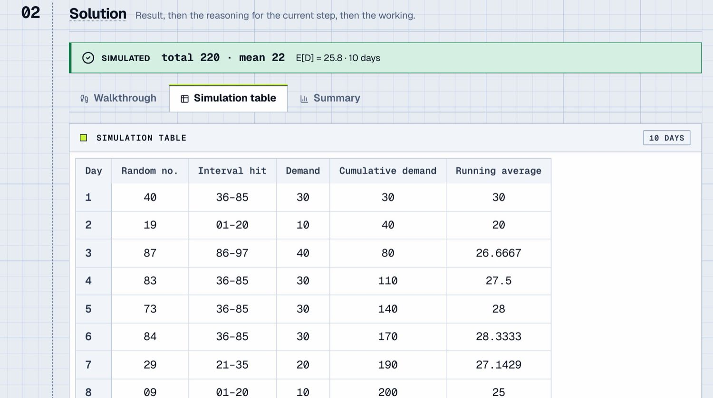
Nine jobs on two machines: the best order, the total time and the idle time.
The problem. Nine jobs A to I each need Machine I first and then Machine II. The times (hours) are:
| Job | A | B | C | D | E | F | G | H | I |
|---|---|---|---|---|---|---|---|---|---|
| Machine I | 2 | 5 | 4 | 9 | 6 | 8 | 7 | 5 | 4 |
| Machine II | 6 | 8 | 7 | 4 | 3 | 9 | 3 | 8 | 11 |
In what order should the jobs run to finish as early as possible? What are the total elapsed time and the idle times?
1Building the sequence with Johnson's rule
At each step, find the smallest time among the jobs not yet placed. If it is on Machine I, put that job in the first free slot from the front. If it is on Machine II, put it in the last free slot from the back. Ties can be broken in any way.
| Step | Smallest time left | Action |
|---|---|---|
| 2 | 2: job A on Machine I | A goes to the front, slot 1 |
| 3 | 3: job E on Machine II | E goes to the back, slot 9 (G also has 3: a tie) |
| 4 | 3: job G on Machine II | G goes to slot 8 |
| 5 | 4: job C on Machine I | C goes to slot 2 |
| 6 | 4: job I on Machine I | I goes to slot 3 |
| 7 | 4: job D on Machine II | D goes to slot 7 |
| 8 | 5: job B on Machine I | B goes to slot 4 |
| 9 | 5: job H on Machine I | H goes to slot 5 |
| 10 | 8: job F on Machine I | F goes to slot 6 |
2The timing (step 11)
A job starts on a machine when both the previous job has left that machine and this job has left the previous machine. So in = max(out of previous job on this machine, out of this job on the previous machine) and out = in + time.
| Job | A | C | I | B | H | F | D | G | E |
|---|---|---|---|---|---|---|---|---|---|
| M I in–out | 0–2 | 2–6 | 6–10 | 10–15 | 15–20 | 20–28 | 28–37 | 37–44 | 44–50 |
| M II in–out | 2–8 | 8–15 | 15–26 | 26–34 | 34–42 | 42–51 | 51–55 | 55–58 | 58–61 |
3The result (step 12)
What Infeasible, Unbounded, Degenerate, Alternate optima and Iteration limit mean, and what to do.
Not every problem has one neat answer. OR/Studio names each special case and explains it. These are the ones you will meet most.
| Message | What it means | What to do |
|---|---|---|
| Infeasible | No answer can satisfy every constraint at once. The app shows which constraints conflict, and a combination of them that gives a false statement (such as 0 ≥ 3). Example lp-infeasible: x1 + x2 <= 2 and x1 + x2 >= 5. | Look for a wrong sign, a wrong number, or a limit that is too tight. Relax one of the conflicting constraints. |
| Unbounded | The objective can grow forever, because nothing stops it. The app names a direction in which you can keep improving. Example lp-unbounded: max 2x1 + x2 with only x1 − x2 <= 10. | A limit is missing. Add the constraint that a real resource would give (time, money, material), or check a wrong ≤ or ≥. |
| Degenerate | A basic variable is exactly 0, so several bases describe the same corner. Pivots can then leave the objective unchanged. Example lp-beale. In Transportation it appears as a used cell with 0 units (shown as ε). | Nothing is wrong. The answer is valid. The app handles ties with a safe rule and watches for cycling. |
| Alternate optima | More than one answer gives the same best value. A non-basic variable has a reduced cost of exactly 0. Every point on the edge between two optimal corners is optimal too. Example lp-alt: z = 10 from (0, 5/2) to (3, 1). | Choose the answer that suits you best for other reasons (cost, ease). Open the second vertex from the Solution card. |
| Iteration limit | The solver stopped after a fixed number of steps (1000 for simplex) to protect your browser. The last tableau is shown, but the app says optimality is not claimed. | Do not trust the value. Check the model for typing mistakes or huge numbers, simplify it, or try another method. |
| Redundant constraint | A constraint is already guaranteed by the others. It never limits the answer. | You may delete it. It is not an error. |
| Integer infeasible | The relaxed LP has an answer but no whole-number point does. Example int-infeasible: 2x1 = 3. | Relax the whole-number rule, or change a constraint. |
| No saddle point | In a game, maximin and minimax differ. The players must mix their actions. | Read the mixed strategies in the result. |
| Not stable (ρ ≥ 1) | In a queue without a capacity limit, customers arrive faster than the servers can serve them. | Add servers or lower the arrival rate. |
| Cyclic dependency | In a project, activity A waits for B and B waits for A (directly or through others). The app names the loop. | Remove one of the links in the loop. |
| Check inputs | A number does not make sense for the model, for example an EPQ production rate that is not larger than the demand. | Read the message under the banner and fix the input it names. |
The same meanings you see when you hover over a word in the app.
This list is built from the app's own dictionary (%%GLOSSARY_COUNT%% entries), so it matches the hover help. Where the same letters mean different things in two modules, the entry names the module.
| x₁, x₂, … | Decision variables: quantities you choose (for example units of a product). The solver finds their best values. |
|---|---|
| s₁, s₂, … | Slack variables: the unused amount of a "≤" constraint. It turns the inequality into an equation. Slack 0 means the constraint is fully used. |
| e₁, e₂, … | Surplus variables: the amount by which a "≥" constraint is exceeded. |
| a₁, a₂, … | Artificial variables: temporary variables added to get a starting solution for "≥" or "=" constraints. They must end at 0 for the solution to be feasible. |
| S1, S2 / D1, D2 | In Transportation: sources (supply points, rows) and destinations (demand points, columns). |
| M1, M2, … | In Job sequencing: the machines every job must pass through, in this order. |
Quick answers when something looks wrong.
The app shows this message, and the reason, if a view fails. Try these in order: press Try again; if the same message returns, press Reset this module. This clears only the autosave of that one module (a damaged saved or shared model can cause it). Your named saves stay. If it still fails, press Back to the overview and open the module again. A different message, This screen could not be downloaded, means the connection dropped or the app was updated while the page was open. Press Reload. Your work is autosaved.
Check these causes before you suspect a mistake. The final answer should agree; the path may not.
Use Diff mode to find where your hand working and the solver first differ.
The app checks for a new version every time you open it with a connection. If you still see an old version: reload the page; or do a hard refresh (Ctrl + Shift + R, or ⌘ + Shift + R on a Mac); or close all OR/Studio tabs or windows and open it again. For an installed app, close it and open it again while online. If this does not help, clear the site data for the app in the browser settings (this also removes saved models, so download the ones you need first).
Yes, after one visit with a connection. Open the app once online first. The app saves itself in the browser. Models, saves and exports all work offline. Only the first load and the check for updates need the internet.
Any recent version of Chrome, Edge, Firefox, Safari or Brave on a computer, Android or iPhone. JavaScript must be on. Very old browsers (such as Internet Explorer) are not supported. The PDF export uses your browser's print window, so allow pop-ups for the site.
Yes. There is no server. Your models are saved only in your own browser, and never sent anywhere. A share link contains the model in the link itself, so only share it with people who may see it.
Open the module and look in Open (the folder icon). The autosave brings back the last model in the module. Clearing the browser's site data deletes both autosaves and saved models. Download important models as JSON files as a backup.
That tab is only shown for models with exactly two variables.
You may be typing inside a box. Click on an empty part of the page. A dialog may also be open (Save, Open or Search). Press Esc to close it.
Please report it with the steps to repeat it at the project page: github.com/Jay-Naik2526/or-studio.
Where each unit of course 702CO0E034 (Operations Research) lives in OR/Studio.
| Unit and topic | Where in the app |
|---|---|
| 1 · Introduction to OR | The Manual page in the app, and chapter 1 of this guide |
| 2 · LP: formulation, matrix form, extreme points, basic feasible solutions | Linear programming → Model; Basic solutions tab |
| 2 · Graphical method and its special cases | Linear programming → Graphical tab (library: infeasible, unbounded, alternate optima, degenerate) |
| 2 · Simplex, Big-M, two-phase, dual simplex | Linear programming → Method switch |
| 2 · Sensitivity analysis and duality | Linear programming → Sensitivity, Duality and Primal–dual tabs |
| 3 · Gomory cuts, branch and bound | Integer programming |
| 4 · Transportation: NWCR, least cost, VAM, MODI, variations | Transportation |
| 4 · Assignment: Hungarian method, variations | Assignment |
| 5 · CPM, PERT, crashing | Project planning (and Network models) |
| 6 · Two-person zero-sum games | Zero-sum games |
| 7 · Simulation: random numbers, generators, demand tables, inventory systems | Simulation → Demand table, Inventory, RNG lab |
| 7 · Discrete-event simulation (clock, event list), queuing systems | Simulation → Queue sim; Queuing analysis |
| 7 · n jobs through two, three and m machines | Job sequencing |
EExperiment 10 (simulation models)
| Activity | Feature | Library problem |
|---|---|---|
| 1 · Demand simulation with random numbers | Simulation → Demand table (Walk-through B) | sim-exp10-demand |
| 2 · Random-number generators and methods | Simulation → RNG lab | sim-rng-lcg, sim-rng-midsquare |
| 4 · Johnson's rule for n jobs on two machines | Job sequencing → Johnson (Walk-through C) | seq-exp10 |
| 5 · Three machines, and job–machine assignment | Job sequencing with three machines; Assignment for the job–machine assignment view | seq-3m, as-3x3 |
Who made OR/Studio and this guide, and how it may be used.
OR/Studio was built for the Operations Research course at NMIMS Shirpur, so that every student can see how each method works, step by step, for free.
1How OR/Studio keeps its answers right
2Made accessible
Every control can be reached with the keyboard. Step changes are announced to screen readers. Tables have headings. Colours always come with words or icons, and animations respect the reduce motion setting of your device.
3Thank you
Thank you to the students and teachers of the course who tried the app and asked for clearer explanations. This guide exists because of your questions.